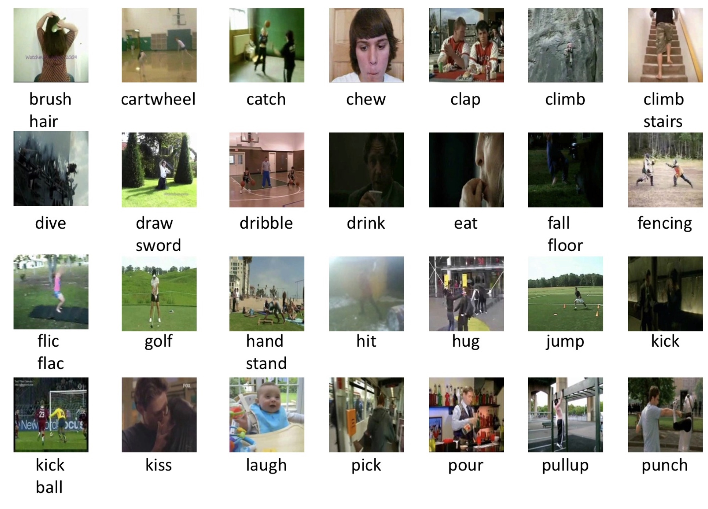

ActivityNet
ActivityNet是一个类似ImageyNet的关于行为识别的比赛
https://github.com/activitynet/ActivityNet 其官网提供了一些
其他方法
https://github.com/facebookresearch/SlowFast/blob/master/INSTALL.md
https://github.com/search?q=activity-recognition
#环境
conda install pytorch torchvision cudatoolkit=10.1 -c pytorch
基础概念
1.GPU
显卡： 简单理解这个就是我们前面说的GPU，尤其指NVIDIA公司生产的GPU系列，因为后面介绍的cuda,cudnn都是NVIDIA公司针对自身的GPU独家设计的。
显卡驱动：很明显就是字面意思，通常指NVIDIA Driver，其实它就是一个驱动软件，而前面的显卡就是硬件。
gpu架构：指的是硬件的设计方式，比如流处理器中有多少core，是否有双精度计算单元等。常见的有Tesla、Fermi、Kepler、Maxwell、Pascal
芯片型号：芯片就是对上述gpu架构思想的实现。 其第二个字母代表是哪种架构。比如GT200、GK210、GM104、GF104等
其他:
显卡系列：本质上没什么区别，知识NVIDIA希望区分的三种选择，GeForce家庭娱乐、Quadro用于工作站、Tesla用户服务器
- GeForce显卡型号：G/GS、GT、GTS、GTX
2.CUDA
| 名称 | 功能 | |
|---|---|---|
| cuda | NVIDIA推出的并行计算架构 | |
| cudn | 专门为深度学习计算设计的软件库，提供很多计算函数，是cuda架构中的一小部分 |
CUDA英文全称是Compute Unified Device Architecture，是显卡厂商NVIDIA推出的运算平台。 CUDA™是一种由NVIDIA推出的通用并行计算架构，该架构使GPU能够解决复杂的计算问题。按照官方的说法是，CUDA是一个并行计算平台和编程模型，能够使得使用GPU进行通用计算变得简单和优雅。

cudatoolkit
cudatoolkit主要由一下组件组成
- compiler: cuda-c和cuda-c++编译器
nvcc - tools
- libraries 部分科学库和实用程序
- cuda samples
- cuda driver。驱动程序
nvcc和nvidia-smi
nvcc就是cuda的编译器，可以从cudatoolkit的/bin目录获取，类似gcc就是c语言的编译器。
cuda程序有两种代码，一种是运行在cpu上的host代码，一种是在gpu上的device代码
nvidia-smi是一个命令行工具，可以监控nvidia GPU设备
#显示当前GPU使用情况
nvidia-smi
QQ: nvcc --version 和nvidia-smi出来的cuda版本不同？
原因: CUDA有两个主要的API：runtime(运行时) API和driver API。这两个API都有对应的CUDA版本（如9.2和10.0等）。
- 用于支持driver API的必要文件(如libcuda.so)是由GPU driver installer安装的。nvidia-smi就属于这一类API。
- 用于支持runtime API的必要文件(如libcudart.so以及nvcc)是由CUDA Toolkit installer安装的。（CUDA Toolkit Installer有时可能会集成了GPU driver Installer）。nvcc是与CUDA Toolkit一起安装的CUDA compiler-driver tool，它只知道它自身构建时的CUDA runtime版本。它不知道安装了什么版本的GPU driver，甚至不知道是否安装了GPU driver。
综上，如果driver API和runtime API的CUDA版本不一致可能是因为你使用的是单独的GPU driver installer，而不是CUDA Toolkit installer里的GPU driver installer。
一般自己电脑上都是没有GPU的，公司的部分电脑上可能会有，如果你想使用免费的GPU资源，推荐如下两个地方
- google的colab
- kaggle
cuda 版本升级 https://blog.csdn.net/wanzhen4330/article/details/81704474
pytorch安装版本问题
以pytorch为例，在安装环境的时候经常因为torch, cuda, torchvision等版本问题，导致无法成功运行。
通过采坑后总结下安装步骤：
# 1.查看机器的nvcc版本
nvcc --version #Cuda compilation tools, release 9.1, V9.1.85
# 2.到官网查找安装对应版本 https://pytorch.org/
比如
pip install torch==1.5.0+cu101 torchvision==0.6.0+cu101 -f https://download.pytorch.org/whl/torch_stable.html
conda install pytorch torchvision cudatoolkit=10.1 -c pytorch
lspci | grep -i nvidia
数据集 & 工具
1.数据集-动态视频
| 数据 | 基本情况 | 链接 |
|---|---|---|
| HMDB-51 | 51个类别，6766个视频 | https://serre-lab.clps.brown.edu/resource/hmdb-a-large-human-motion-database/#dataset |
| UCF-101 | 101类别，13320个短视频 | https://www.crcv.ucf.edu/research/data-sets/ucf101/ |
| Kinetics-700 | 650000个，用于ActivityNet比赛 | https://deepmind.com/research/open-source/open-source-datasets/kinetics/ |
| ava | google。多人不同动作数据集 | https://research.google.com/ava/explore.html |
| ActivityNet |
HMDB-51: 压缩包大概6G，主要包含类别
- 常见面部动作（smile，laugh，chew，talk）
- 复杂面部动作
- 直梯动作
- 多人交互


UCF-101: 包含的数据类型
- 人物交互
- 人体动作
- 人人交互
- 乐器演奏
- 体育运动
Kinetics
- 单人行为，例如绘画，喝酒，大笑，抽拳;
- 人人行为，例如拥抱，亲吻，握手；
- 人物行为，例如打开礼物，修剪草坪，洗碗。
ava-action：
包含了80个原子动作(比如走路，握手。。) 数据包含三部分:
- person pose：
- 人-物交互
- 人人交互
https://research.google.com/ava/explore.html
一共430个video，其中235个train， 64个validation，131 test。 每个视频是15min，每1s钟进行以此标注。
有一个机遇faster-rcnn的预训练模型。 tensorflow的目标检测api https://github.com/tensorflow/models/tree/master/research/object_detection#tensorflow-object-detection-api
数据格式 ava_train_v2.2.csv
video_id, middle_frame_timestamp, person_box, action_id, person_id
stand, sit, watch some body, listen to sb....
toread
https://www.jianshu.com/p/a4cc71126796
2.数据集-静态图像
https://blog.csdn.net/lgk1996/article/details/79814888
| data | basic description | link |
|---|---|---|
| Stanford40 Dataset | 斯坦福-李飞飞团队穿件，包括40中不同的行为类别，9532张图片 | http://vision.stanford.edu/Datasets/40actions.html |
| MPII Pose Dataset | 主要是human pose estimation |
Stanford40 Dataset: runing, phoning, play,drinking等, taking photos
B. Yao, X. Jiang, A. Khosla, A.L. Lin, L.J. Guibas, and L. Fei-Fei. Human Action Recognition by Learning Bases of Action Attributes and Parts. Internation Conference on Computer Vision (ICCV), Barcelona, Spain. November 6-13, 2011.
MPII Pose Dataset

3.工具
常用的工具：
https://zhuanlan.zhihu.com/p/38597956
| tool | 说明 | 语言 | 链接 |
|---|---|---|---|
| openpose | 多人，2D，实时 | python-API | https://github.com/CMU-Perceptual-Computing-Lab/openpose |
| facebook-densePose | mask-RCNN的变体 | github.com/facebookresearch/Densepose | |
| alphaPose | tf, pytorch | ||
| Human Body Pose Estimation | |||
| Deeppose(2014) |
(1)Open-mmlab家族
MMSkeleton
原理的名字叫 st-gcn，后来改为 MMSkeleton
st-gcn: 比较老了 https://hub.docker.com/r/jaehwankimneo/st-gcn
mmskelton: https://hub.docker.com/r/ioir123ju/mmskeleton/tags
python setup.py develop
中间可能会报很多错，需要一步步的改
环境配置http://blog.sina.com.cn/s/blog_679f93560102wpyf.html
安装好mmskelton后，可以选安装mmdetection，这个参照其github上的说明来就行
mmcv
mmcv是一个MMLAB开发的cv的基础工具库，用来支持mmdetection，mmaction等
(2)openpose
运行方式:
- 命令行: ./build/examples/openpose/openpose.bin xxx
- c++接口
- Python接口
docker: docker pull exsidius/openpose
还有在google colab上进行尝试https://github.com/CMU-Perceptual-Computing-Lab/openpose/issues/949#issue-387855863
! apt update
! apt install -y cmake sudo libopencv-dev
! git clone https://github.com/CMU-Perceptual-Computing-Lab/openpose.git
! cd openpose/ubuntu && ./install_cmake.sh && ./install_cuda.sh && ./install_cudnn.sh
! cd openpose && git pull origin master && rm -r build || true && mkdir build && cd build && cmake .. && make -j`nproc`
# example demo usage
!cd openpose && ./build/examples/openpose/openpose.bin --video examples/media/video.avi --write_json output/ --display 0 --render_pose 0
cpu-only的版本：要求8G内存
安装
git clone https://github.com/CMU-Perceptual-Computing-Lab/openpose
cd build/
make -j`nproc`
(3) gluon
综述_action recognition
Copyright © 2015 Powered by MWeb, Theme used GitHub CSS.